РБ
Ромэрик Банхаммер
Командир ДШР
Учебные и информационные материалы подразделения: аттестация, разминирование СВУ, первая помощь, штурм, переговоры, специальные сигналы и правила выкупа заложников.
Два этапа проверки рекрута: теория и практика.
02Типы устройств, порядок обезвреживания и отыгровки.
03Алгоритм, состояния, СЛР, ранения и кровотечения.
04Группы, терминология и тактики зачистки помещений.
05Цели, обязательные действия и запреты переговорщика.
06Специальные сигналы и нормативы сбора личного состава.
07Захват заложников, похищения и ценовая политика выкупа.
08Запреты и наказания для сотрудников — компактная шпаргалка.
Командир ДШР
Заместитель командира
Система кодов связи обновляется. Актуальные обозначения появятся здесь после утверждения.
Единая система докладов в рацию. Код строится по схеме группа-объект-состояние.
/r 2-4-1 — последняя цифра обозначает состояние, первые две — пост.
Аттестация на должность оперативника проходит в два этапа: теория и практика. Отмечайте пройденные темы — прогресс сохраняется в браузере.
Практика принимается после успешной сдачи теории.
30 случайных вопросов из общего банка (50 вопросов). Вопросы и варианты ответов перемешиваются полностью. На каждый вопрос — 1 минута 10 секунд, весь тест — 35 минут. Проходной балл — 25 из 30 (83%). Ответ нельзя изменить, возврат к вопросам и переходы по сайту запрещены. Результат отправляется командиру. Тест проходится один раз: повторная попытка — только с разрешения командира.
30 случайных вопросов из общего банка (50 вопросов) по пяти темам: СВУ, первая помощь, переговоры, штурм и запреты главы 4. Вопросы и варианты ответов перемешиваются полностью. На каждый вопрос — 1 минута 10 секунд, весь тест — 35 минут. Проходной балл — 25 из 30 (83%). Результат отправляется командиру.
Самодельные взрывные устройства: типы и виды, компоненты, растяжки, порядок обезвреживания и отыгровки действий сапёра.
Типы — не виды. Тип определяет конструкцию устройства, вид — принцип срабатывания.
Нажимная плита снаружи корпуса. Детонация при нажатии или при снятии груза.
СВУ на теле человека. Снимается только после обесточивания.
Триггер на натяжение: граната, мина или взрыватель.
Механический, электромеханический, дистанционный, химический.
Самодельная мина — то же СВУ механического вида с нажимной плитой. Плита на практике используется снаружи корпуса. Бывает два варианта: детонация при нажатии на плиту и детонация при снятии груза с плиты.
Обезвреживается прямым извлечением взрывчатого компонента, если это возможно. Если плита в активированном состоянии — сначала фиксируем предмет, который её активирует. Затем, если позволяют обстоятельства, извлекаем взрывчатый компонент либо фиксируем плиту инородным предметом и приводим механизм в неисправность.
/me снимает набор сапёра, открывает, достаёт индикаторную отвёртку, осматривает ВУ
/do Растяжки обнаружены? (( Если да, то обезвреживаем. ))
/do Вид растяжки?
/me достает зажим-кошку, фиксирует нажимную плиту
/me достает из СВУ тротиловую шашку, из шашки выкручивает — взрыватель, из взрывателя — капсюль
/me снимает бронированный кейс, открывает, ставит на пол
/me раскладывает компоненты по кейсам, закрывает кейсы, вешает на крепления бронежилета
/do СВУ обезврежено.Всего четыре вида. От вида зависит способ обезвреживания — определять его нужно как можно точнее.
Нажимные пластины, кнопки, растяжки, шестерни, рычаги.
Платы, провода, аккумуляторы, электродетонаторы.
Приёмник сигнала: телефон, рация, антенна, пейджер.
Химический взрыватель или колба с реагентом.
Механическое действие — воздействие на материальное тело со стороны других материальных тел, которое приводит к активации капсюльного детонатора, а затем к детонации основного заряда.
Признаки: нажимные пластины, кнопка, растяжка, плита, шестерни, рычаги.
Любое внешнее воздействие может привести к детонации. Не меняем положение устройства в пространстве и минимизируем любые механические воздействия на корпус. Задача — обезвредить детонатор: он может быть в составе тротиловой шашки или отдельным компонентом. Достаточно выкрутить шашку либо удалить капсюль.
/me снимает набор сапёра, открывает, достаёт индикаторную отвёртку, осматривает ВУ
/do Растяжки обнаружены? (( Если да, то обезвреживаем. ))
/do Вид растяжки?
/me достает из СВУ тротиловую шашку, из шашки выкручивает — взрыватель, из взрывателя — капсюль
/me снимает бронированный кейс, открывает, ставит на пол
/me раскладывает компоненты по кейсам, закрывает кейсы, вешает на крепления бронежилета
/do СВУ обезврежено.СВУ с электронными компонентами: радиоуправляемые или таймерные механизмы, аккумуляторы, микросхемы, электродетонаторы.
Признаки: рычаги, переключатели, кнопки, провода на корпусе и внутри, ведущие к плате от детонатора и к тротиловой шашке.
Если провода залиты металлом или свинцом и определить нужный провод невозможно — извлекаем сам детонатор или часть заряда с детонатором.
/me достает генератор ЭМИ, устанавливает, включает
/do Электромагнитные поля уничтожены.
/me снимает набор сапёра, открывает, достаёт индикаторную отвёртку и кусачки, осматривает ВУ
/do Растяжки обнаружены? (( Если да, то обезвреживаем. ))
/do Вид растяжки?
/me откручивает крышку, прозванивает провода, находит нужный, перекусывает
/do СВУ обесточено.
/me снимает с разгрузки бронированный кейс, открывает, ставит на пол
/me достает из СВУ тротиловую шашку, из шашки выкручивает — взрыватель, из взрывателя — капсюль
/me раскладывает компоненты по кейсам, закрывает, вешает на крепления бронежилета
/do СВУ обезврежено.Устройство приводится в действие по сигналу или по истечении заданного времени, без воздействия на него цели. Детонирующее приспособление производит подрыв заряда по команде или по окончании отсчёта.
Признак: при осмотре внутри обнаруживается приёмник информации — телефон, антенна, рация, пейджер.
/me снимает набор сапёра, открывает, достаёт индикаторную отвёртку и генератор радиопомех
/me активирует генератор радиопомех, устанавливает, осматривает ВУ
/do Растяжки обнаружены? (( Если да, то обезвреживаем. ))
/do Вид растяжки?
/me откручивает крышку, прозванивает провода, находит нужный провод и перерезает его
/do СВУ обесточено.
/me снимает бронированный кейс, открывает, ставит на пол
/me достает из СВУ тротиловую шашку, из шашки выкручивает — взрыватель, из взрывателя — капсюль
/me раскладывает компоненты по кейсам, закрывает, вешает на крепления бронежилета
/do СВУ обезврежено.Индивидуальные вещества или смеси, способные к быстрой самораспространяющейся химической реакции с выделением большого количества теплоты и газообразных продуктов под влиянием внешнего воздействия: удара, нагревания, трения.
/me снимает набор сапёра, открывает, достаёт индикаторную отвёртку, осматривает ВУ
/do Растяжки обнаружены? (( Если да, то обезвреживаем. ))
/do Вид растяжки?
/me откручивает крышку, осматривает содержимое, обнаруживает химический взрыватель
/me снимает с разгрузки кейс с песком, открывает, ставит на пол
/me выкручивает химический взрыватель из тротиловой шашки
/me раскладывает компоненты СВУ по кейсам с песком, закрывает, вешает на крепления бронежилета
/do СВУ обезврежено.Разрешено вытащить тротиловую шашку целиком, не выкручивая ничего.
Ингибиторы химических реакций — вещества, в присутствии которых скорость реакции уменьшается или реакция прекращается. Замедляют цепные и каталитические реакции.
/me снимает набор сапёра, открывает, достаёт индикаторную отвёртку, осматривает ВУ
/do Растяжки обнаружены? (( Если да, то обезвреживаем. ))
/do Вид растяжки?
/me откручивает крышку, осматривает содержимое, находит химическую колбу с веществом
/me достает из аптечки шприц и бутыль ингибитора, набирает вещество ингибитора в шприц, вводит вещество в колбу
/me снимает с разгрузки кейс с песком, открывает, ставит на пол
/me раскладывает компоненты СВУ по кейсам с песком, закрывает, вешает на крепления бронежилета
/do СВУ обезврежено.Кейс с песком поглощает радиацию и лучше фиксирует компоненты СВУ.
Комбинированные — устройства, которые строго не структурированы и состоят из множества компонентов: электронный и механический таймер, кнопка смертника, нажимная плита и другое. За основу берётся любой из стандартных видов. В одном корпусе могут встретиться сразу несколько типов компонентов и секций.
Электронный компонент — базовое дискретное электронное устройство или физическая сущность, часть электронной системы, используемая для воздействия на электроны или связанные с ними поля.
Компоненты делятся на пассивные, активные и электромеханические. Пассивные сами энергию не производят. Активные обладают запасом энергии — например, батарейки. Электромеханические могут производить энергию за счёт подвижных частей или работать от источника питания.
При осмотре можно обнаружить провода, платы, батарейные отсеки. К ним могут подключаться телефоны, рации, пейджеры — приёмники сигнала для детонатора. Поэтому генератор радиопомех ставится до начала работы. Затем находим провод, ведущий к шашке детонатора или к основному заряду, и перерезаем его кусачками. После этого устройство обесточено и его можно разбирать по компонентам.
Напрямую связаны с электроникой электромеханический и дистанционный виды СВУ.
Пассивный электронный компонент, часто встречается на практике. Бывает с дисплеем и без. Характеризуется дисплеем с соответствующим содержанием и периодичными звуковыми сигналами. Располагается промежуточным компонентом на электрической цепи. По истечении времени подаёт энергию дальше по микросхеме, что приводит к детонации через взрыватель.
Обезвреживание: обесточить цепь, разорвать цепь до или после таймера, либо, если позволяют обстоятельства, выключить таймер через внешние управляющие компоненты.
/me снимает набор сапёра, открывает, достаёт индикаторную отвёртку
/me осматривает ВУ
/do Растяжки обнаружены? (( Если да, то обезвреживаем. ))
/do Вид растяжки?
/me откручивает крышку, прозванивает провода, находит нужный провод и перерезает его
/do СВУ обесточено.
/me снимает бронированный кейс, открывает, ставит на пол
/me достает из СВУ тротиловую шашку, из шашки выкручивает — взрыватель, из взрывателя — капсюль
/me раскладывает компоненты по кейсам, закрывает, вешает на крепления бронежилета
/do СВУ обезврежено.Компонент на шестернях, работает как механический будильник: одна шестерня медленно двигает другую до конца. В конце запускается механизм инициации взрыва — например, быстрая шестерня взаимодействует с кремнем, создаётся искра, воспламеняющая тротиловую шашку.
Признак: звук шестерён и других механизмов.
Обезвреживание: остановка механизма — вставить твёрдый предмет между шестернями.
/me снимает набор сапёра, открывает, достаёт индикаторную отвёртку, осматривает ВУ
/do Растяжки обнаружены? (( Если да, то обезвреживаем. ))
/do Вид растяжки?
/me достает из СВУ тротиловую шашку, из шашки выкручивает — взрыватель, из взрывателя — капсюль
/me снимает бронированный кейс, открывает, ставит на пол
/me раскладывает компоненты по кейсам, закрывает кейсы, вешает на крепления бронежилета
/do СВУ обезврежено.Встречается в виде антенны, рации, телефона, пейджера. По дистанционному сигналу устройство реагирует и по электрической цепи подаёт энергию на взрыватель, который детонирует основной заряд.
Обезвреживание: включить генератор радиопомех и настроить на нужный тип сигнала. Затем обесточить устройство — извлечь или уничтожить блок питания, либо обрезать провод питания в цепи.
/me достает генератор радиопомех, включает, вешает на разгрузкуПлита используется снаружи корпуса для создания самодельной мины. Два варианта: детонация при нажатии на плиту либо при снятии груза с плиты.
Обезвреживание: прямое извлечение взрывчатого компонента, если возможно. Если плита активирована — фиксируем предмет, который её активирует, затем извлекаем заряд либо фиксируем плиту инородным предметом и приводим механизм в неисправность.
Зачастую используется на механическом виде СВУ.
/me снимает набор сапёра, открывает, достаёт индикаторную отвёртку, осматривает ВУ
/do Растяжки обнаружены? (( Если да, то обезвреживаем. ))
/do Вид растяжки?
/me достает зажим-кошку, фиксирует нажимную плиту
/me достает из СВУ тротиловую шашку, из шашки выкручивает — взрыватель, из взрывателя — капсюль
/me снимает бронированный кейс, открывает, ставит на пол
/me раскладывает компоненты по кейсам, закрывает кейсы, вешает на крепления бронежилета
/do СВУ обезврежено.СВУ может находиться в закрытом кейсе. Тип замка — электрический или механический; в обоих случаях действуем одинаково. Достаём из набора сапёра инжекторную (индикаторную) отвёртку и генератор радиопомех, активируем генератор, осматриваем замок, затем вскрываем его отвёрткой и аккуратно снимаем в сторону.
/me снимает набор сапёра с разгрузки, открывает его, достаёт индикаторную отвёртку и генератор радиопомех
/me активирует генератор радиопомех, вешает на разгрузку, осматривает замок
/do Растяжки обнаружены? (( Если да, то обезвреживаем. ))
/do Вид растяжки?
/me индикаторную отвёртку проталкивает в замочную скважину до упора, после чего поворачивает отвёртку в правую сторону до упора
/do Замок открыт.Осмотреть растяжку, зафиксировать скобу, прижав её рукой к корпусу. Затем вставить собственную чеку или иглу в отверстия проушины спускового рычага и стенок трубки ударного механизма. После этого гранату можно снять с растяжки и унести.
/me обхватывает рукой корпус гранаты, одновременно просовывает палец в кольцо
/do Спусковой рычаг заблокирован.
/me сжимает гранату рукой, наклоняя её в сторону натяжения, затем фиксирует усики шплинта, удерживающие чеку
/me достает кусачки с разгрузки, после чего перекусывает леску
/do Растяжка обезврежена.Осмотреть растяжку, зафиксировать скобу пальцами за УЗРГМ, второй рукой взяться за корпус гранаты и аккуратно выкрутить корпус в противоположную сторону, выкручивая УЗРГМ.
/me обхватывает рукой корпус гранаты
/do Спусковой рычаг заблокирован.
/me сжимает гранату рукой, наклоняя её в сторону натяжения
/me достает кусачки с разгрузки, после чего перекусывает леску
/me достает чеку из разгрузки, вставляет чеку в гранату
/do Растяжка обезврежена.Если скоба спилена вплоть под основание и прижать её невозможно, руками такую гранату разминировать нельзя. Используется контролируемый подрыв выстрелом в гранату либо «Ингибитор-1М».
Варианты разминирования:
Одним оперативником: зафиксировать рычаг запала одной из гранат и продолжить обезвреживание второй по инструкции.
Двумя оперативниками: один фиксирует рычаг запала одной гранаты, второй обезвреживает вторую по инструкции.
/me снимает с разгрузки генератор радиопомех, активирует, вешает на разгрузку
/me снимает с разгрузки набор сапёра, открывает, ставит на пол
/do Растяжки обнаружены? (( Если да, то обезвреживаем. ))
/do Вид растяжки?
/me достает индикаторную отвёртку и кусачки, откручивает крышку СВУ
/me прозванивает провода, находит нужный, перекусывает
/do СВУ обесточено.
/me снимает пояс смертника с человека
/me снимает с разгрузки бронированный кейс, открывает, ставит на пол
/me достаёт нож и разрезает ткань пояса, вынимает тротиловую шашку
/me кладет шашку в бронированный кейс, закрывает, вешает на разгрузку
/do СВУ обезврежено./me достает генератор радиопомех, включает, вешает на разгрузку
/me надевает резиновые перчатки, после чего осматривает устройство
/me снимает с разгрузки набор сапёра, достает из него индикаторную отвёртку и кусачки
/do Растяжки обнаружены? (( Если да, то обезвреживаем. ))
/do Вид растяжки?
/me прозванивает провода, находит нужный, перекусывает его
/do С4 обесточена.
/me снимает с разгрузки кейс, открывает его и складывает в него пластид, закрывает кейс и вешает на лямки бронежилета
/do С4 обезврежена./me достает генератор радиопомех, включает, вешает на разгрузку
/me надевает резиновые перчатки, после чего осматривает устройство
/do Растяжки обнаружены? (( Если да, то обезвреживаем. ))
/do Вид растяжки?
/me снимает с разгрузки кусачки, после чего перекусывает провод питания
/do С4 обесточена.
/me снимает с разгрузки кейс, открывает его и складывает в него пластид, закрывает кейс и вешает на лямки бронежилета
/do С4 обезврежена./me снимает маскирующий слой вокруг взрывателя, вставляя в отверстия штоков ударников кусок проволоки
/me снимает с разгрузки крюк, после чего подцепляет его к мине, отходит на 50 метров, выдергивает мину
/me, вернувшись, вывинчивает взрыватель, вращая его против часовой стрелки, и аккуратно откладывает мину в сторону
/do Мина обезврежена./me разгребает грунт вокруг взрывателя, не нажимая на усики или головку взрывателя
/me вставляет чеку в отверстие штока ударника
/me снимает с разгрузки крюк, после чего подцепляет его к мине, отходит на 50 метров, выдергивает мину
/me, вернувшись, вывинчивает взрыватель и аккуратно откладывает мину в сторону
/do Мина обезврежена.ПВВ — взрывчатые вещества и смеси, обладающие пластичностью. Легко деформируются от незначительных усилий и сохраняют приданную форму неограниченное время в условиях эксплуатационных температур.
Что усложняет работу: провода залиты металлом, растяжки. Если провода залиты и определить ведущий к детонатору невозможно — извлекаем сам детонатор из пластида, тем самым деактивируя ПВВ.
Каждое СВУ уникально: у преступников нет чётких инструкций, поэтому в составе могут быть любые компоненты.
Кроме обычного снаряжения сапёр должен иметь рабочие инструменты. Они переносятся в жилете, подсумке и рюкзаке. Конкретный перечень зависит от ситуации — ниже примерный набор.
Позволяет оперативно предотвратить катастрофические последствия возможного взрыва: снижает выделяемую энергию, уменьшает разрушения и повреждения от осколков, снижает риск пожаров.
Это покрывало с бронепластинами, а не химическое вещество.
Бывает с песком и без. Используется для транспортировки компонентов СВУ на полигон для дальнейшего контролируемого подрыва или для доставки химического типа в лабораторию.
Кейс с песком:
Инструмент для дистанционного воздействия на электронные компоненты устройства.
Не «волшебная палочка»: против чисто механического взрывателя или экранированного корпуса («клетка Фарадея») бесполезен. Мощность генератора должна быть не менее 150 МГц.
«Щит» сапёра: не выжигает электронику, как ЭМИ, а забивает эфир шумом, чтобы сигнал на подрыв не дошёл до детонатора.
Не гарантия: обученный противник может использовать ловушки. Против СВУ на проводах радиопомехи бесполезны. Если устройство запрограммировано на подрыв при потере сигнала, включение джаммера вызовет немедленный взрыв.
Защищают в основном от осколков, а не от самого взрыва — на 100% не защищают.
В армии чаще всего используются ОВР-2-02 и ОВР-3Ш. ОВР-3Ш — штурмовой комплект: позволяет проводить и минно-взрывные мероприятия, и штурмовые действия. Для химической, радиационной и биологической защиты применяются ОЗК, ПМК-2 или другие армейские комплекты, в зависимости от ситуации — костюмы с замкнутой системой дыхания.
Проводится в безлюдных местах, далеко от инфраструктуры. Посреди полигона выкапывается яма глубиной около 30 сантиметров. Туда из бронированного кейса выкладываются все взрывоопасные компоненты, подключаются к детонатору и взрываются.
/me достает саперную лопату, выкапывает яму
/me снимает с разгрузки бронированный кейс, открывает его и ставит на землю, после чего достает тротиловую шашку и кладет в яму
/me достает с разгрузки детонатор и провода, подключает детонатор к тротиловой шашке
/me отходит на тридцать метров и ложится ногами к СВУ (/anim 69)
/me достает с разгрузки пульт детонатора и нажимает на кнопку
/do СВУ взорвано.Химический тип СВУ отвозится в лабораторию (ФСБ, ЕСС).
Виды помощи, алгоритм действий, неотложные состояния, кровотечения, ранения, переломы, ожоги и отравления.
Совокупность простых, целесообразных мер по охране здоровья и жизни пострадавшего от травмы или внезапно заболевшего человека. Оказывается на месте происшествия, до прихода врача или транспортировки в больницу.
Оказывать может любой человек при минимальных знаниях.
Комплекс простейших мероприятий на месте получения повреждения в порядке само- и взаимопомощи с использованием подручных средств.
Оказывают лица со специальной подготовкой: фельдшеры, медицинские сёстры.
Специализированная скорая медицинская помощь: врачи специализированных бригад СМП, специалисты приёмных отделений медицинских организаций.
Как правило, подразумевает эвакуацию в медицинскую организацию.
Сосудосуживающее, гипертензивное, бронхолитическое и противоаллергическое средство. Применяется при острых состояниях и анафилактическом шоке.
Вызывает потерю чувствительности, чаще всего болевой. Бывает в виде мази, таблетки, геля, спрея и инъекции.
Обезболивающее: частично или полностью снимает боль, чтобы человек не умер от болевого шока — при пулевых ранениях, открытых переломах и других травмах.
Средство временной остановки кровотечения из крупных сосудов. Используется при артериальном и смешанном кровотечении.
Средство временной остановки кровотечения из крупных сосудов. Используется при венозном кровотечении.
Защита вены от попадания воздуха и инфекции, а также средство остановки или замедления кровотечения.
Пенный антисептик без спирта: снижает угрозу кожных инфекций и обеспечивает пролонгированное антимикробное действие.
Обморок — кратковременная потеря сознания из-за временного нарушения мозгового кровотока. Обычно длится от нескольких секунд до минуты, в редких случаях — до 30 минут.
Предобморочное состояние: головокружение и слабость, потемнение или «мушки» перед глазами, тошнота и холодный пот, шум в ушах.
/me уложил аккуратно человека в горизонтальное положение, придерживая голову пострадавшего
/me снял разгрузочный жилет, сложил его и подложил под ноги пострадавшего
/me начал расстёгивать одежду и расслаблять пояс на пострадавшем
/me протянул руку к аптечке, достал нашатырь и начал водить им у носа пострадавшего
/me начал проводить проверку пульса и дыхания у человекаСЛР — комплекс неотложных мероприятий для восстановления жизнедеятельности организма и выведения из клинической смерти. Применяется при отсутствии признаков жизни: дыхания, кровообращения (пульса), сознания.
Включает два основных мероприятия, проводимых параллельно: непрямой массаж сердца и искусственную вентиляцию лёгких.
Два способа: «изо рта в рот» и в крайнем случае «изо рта в нос».
Соотношение вдохов и нажатий — 2 к 30. Желательно использовать барьеры: от носового платка до специальных плёнок и масок из аптечки.
При подозрении на травму шеи или позвоночника использовать метод вывода нижней челюсти. Пострадавшего без сознания перевести в устойчивое боковое положение. Если он дышит самостоятельно — разрешить занять удобное положение, включая сидячее.
Асфиксия — жизнеугрожающее состояние с критическим недостатком кислорода и избытком углекислого газа. Причины: закупорка дыхательных путей, удушение, утопление, сдавление грудной клетки, недостаток кислорода в среде, нарушение газообмена.
Отморожение — повреждение тканей при низких температурах с нарушением кровообращения и возможным некрозом. Страдают пальцы рук и ног, нос, уши, щёки.
Симптомы: потеря чувствительности поражённых участков, ощущение покалывания.
Кожа белеет, затем краснеет и припухает, появляются покалывание и боль.
Волдыри с кровяным содержимым, сильная боль.
Омертвение кожи и подкожных тканей.
Омертвение глубоких тканей и костей, возможна ампутация.
Анафилактический шок — тяжёлая угрожающая жизни аллергическая реакция немедленного типа, развивается очень быстро после контакта с аллергеном.
Признаки: резкое падение давления, затруднение дыхания, зуд, покраснение, крапивница, отёк, отёк гортани и языка. В тяжёлых случаях — потеря сознания, остановка дыхания и кровообращения.
Шок развивается быстро, каждая минута важна. Даже если симптомы прошли, возможен двухфазный шок — медицинская помощь обязательна.
Эпилепсия — хроническое неврологическое заболевание с повторяющимися приступами из-за аномальной электрической активности нейронов мозга.
Симптомы: судороги, потеря сознания, сенсорные ощущения, автоматические движения, тошнота, головокружение, ощущение кома в горле.
Обеспечить безопасность вокруг, подложить что-то мягкое под голову, после приступа уложить набок и дать отдохнуть.
Инсульт — острое нарушение мозгового кровообращения с повреждением участков мозга. Бывает ишемическим (закупорка сосуда) и геморрагическим (разрыв сосуда с кровоизлиянием).
Симптомы: внезапная слабость или паралич конечностей, асимметрия лица, нарушение речи, зрения, координации, головокружение, расстройство сознания.
Не давать лекарства, не ставить капельницы, не перемещать без необходимости.
Отёк лёгкого — острое состояние, при котором в лёгких накапливается жидкость и нарушается газообмен. Может быть кардиогенным и некардиогенным.
Признаки: одышка в покое, ощущение удушья, клокочущее дыхание, хрипы, кашель с пенистой или кровянистой мокротой, цианоз, учащённое дыхание и пульс, спутанность сознания, отёчность лица и шеи. В положении лёжа становится хуже.
Стенокардия — боль или дискомфорт в груди из-за недостатка кислорода для сердца. Приступ обычно длится от 1 до 15 минут.
Сотрясение — лёгкая черепно-мозговая травма с нарушением работы мозга без видимого структурного повреждения.
Признаки: головная боль, головокружение, тошнота и рвота, затуманенное зрение, кратковременная потеря сознания, проблемы с памятью, чувствительность к свету и шуму.
/me начал аккуратно укладывать человека в горизонтальное положение, придерживая голову
/me достал плед из разгрузочного жилета и подложил его под голову пострадавшего
/me начал расстёгивать воротник пострадавшего
/me начал аккуратно переворачивать человека на правый бок, подкладывая левую руку ему под щёку, затем согнул левую ногу
/me начал проверку пульса и дыхания пострадавшегоПри травмах груди часто встречаются переломы и ушибы рёбер: припухлость, резкая боль, усиливающаяся при дыхании и изменении положения тела.
Виды наружных кровотечений различаются по источнику и степени опасности. От вида зависит способ остановки.
Наблюдается при ссадинах, порезах, царапинах. Непосредственной угрозы для жизни, как правило, не представляет. Признак — ярко-красная кровь в небольшом количестве.
/me достает аптечку, открывает её
/me достает из аптечки антисептическое средство и вату, промачивает вату
/me обрабатывает область вокруг раны
/me достает из аптечки стерильную повязку, накладывает на рану (( При необходимости ))При подозрении на заражение крови вызывается скорая помощь. Симптомы — в разделе ниже.
Характеризуется меньшей скоростью кровопотери: кровь тёмно-вишнёвая, вытекает «ручьём». Менее опасно, чем артериальное, но требует скорейшей остановки. Уменьшается при придавливании участка ниже ранения.
/me достает телефон, вызывает СМП, убирает телефон
/me достает аптечку, открывает её
/me достает антисептическое средство и вату, обрабатывает область вокруг раны
/me достает стерильную салфетку, плотный слой ваты и бинт
/me накладывает на ранение стерильную салфетку, затем плотный слой ваты, туго фиксирует всё бинтом
/do Давящая повязка наложена.Слои тампонада: стерильная салфетка → плотный слой ваты → стерильная салфетка, всё плотно завязать.
Самое опасное: при ранении крупных артерий большая потеря крови происходит за короткое время. Признаки — пульсирующая алая струя, быстро расплывающаяся лужа алого цвета, одежда быстро пропитывается кровью. Смерть может наступить в течение нескольких минут, буквально до пяти.
/me передавливает артерию кулаком
/me достает аптечку, открывает её
/me достает жгут, накладывает выше ранения (( Примерно 5 сантиметров. ))
/do Кровотечение остановлено.
/me достает маркер, затем пишет на жгуте время наложения
/me достает телефон, вызывает СМП, убирает телефон
/me достает антисептическое средство и вату, обрабатывает область вокруг раны
/me накладывает на ранение стерильную салфетку, обматывает бинтом
/do Бинт зафиксирован.Излитие крови из повреждённого сосуда внутреннего органа. Смерть может наступить от нескольких минут до нескольких часов — в зависимости от скорости кровопотери и места.
Одновременно присутствуют артериальное, венозное и капиллярное кровотечение. Наблюдается, например, при отрыве конечности.
/me достает аптечку, открывает её
/me достает жгут и накладывает выше ранения
/do Кровотечение остановлено.
/me записывает время наложения жгута
/me достает телефон, вызывает скорую помощь, убирает телефон
/me достает антисептическое средство и вату, промачивает вату, затем обрабатывает область вокруг раны
/me накладывает на ранение стерильную салфетку, обматывает бинтом
/do Бинт зафиксирован.Жгут (турникет) — средство временной остановки кровотечения из крупных сосудов: прочная узкая полоса материала, прижимающая сосуд к костным выступам. Импровизированный жгут делают из ремня, верёвки, велокамеры.
Тампонад состоит из трёх слоёв: ватно-марлевая повязка, сгусток ваты на место ранения, ватно-марлевая повязка.
Соблюдение правил важно, чтобы не допустить летального исхода при попадании кислорода или инфекции в вену.
Шок, ампутация, невозможность следить за возобновлением кровотечения.
Пуля вошла в тело и осталась внутри.
Пуля прошла насквозь.
Пуля задела тело.
Рикошет — снаряд задел поверхность тела, отскочив от другого предмета.
/me достает телефон, вызывает СМП
/me запрокидывает голову человека назад, чуть ее поворачивая
/me достает аптечку, открывает ее
/do Вид кровотечения?
(( Останавливаем кровотечение. ))
/do Есть ли противопоказания на обезболивающие?
/me достаёт шприц с обезболивающим, вкалывает пострадавшему
/me достает зеленку из аптечки и обрабатывает края ранения
/me достает давящую повязку, накладывает ее на пулевое ранение
(( В случае сквозного ранения повязка накладывается на оба отверстия. ))
/do Тампонад наложен.Колотая рана — проникающая травма кожи, нанесённая ножом или подобным заострённым предметом.
Инородное тело фиксируют обязательно, если медицинская помощь недоступна в ближайшие 1–2 часа или транспортировку проводите самостоятельно. Для фиксации обложить предмет тканью, салфетками, марлей или тампонадами, затем наложить дополнительную повязку.
Ржавый нож не достаётся из тела, если воткнут в туловище, но можно достать, если он воткнут в руку или ногу.
Перелом — нарушение анатомической целостности кости. Бывает открытым и закрытым.
Наиболее опасен: при повреждении кожного покрова образуется открытая рана, возможен риск инфекционного заражения крови.
/me кладет человека на пол
/me достает телефон, вызывает СМП
/me достает аптечку, открывает ее
/me достает нож, разрезает одежду около перелома
/do Вид кровотечения?
(( Останавливаем кровотечение. ))
/me берет зеленку, обрабатывает края раны, накладывает стерильную салфетку
/me достает из аптечки шину, накладывает на место перелома
/me берет бинты, аккуратно фиксирует шину
/do Шина зафиксирована.Кожный покров не нарушен, выхода кости не видно. Признаки: припухлость, выступающие кости, упирающиеся в кожу, искривление конечностей.
/me кладет человека на пол
/me достает телефон, вызывает СМП
/me достает аптечку, открывает ее
/me достает из аптечки шину, накладывает на место перелома
/me берет бинты, туго фиксирует шину
/do Шина зафиксирована.Назначение — обездвижить повреждённую конечность. Шина делается из любого твёрдого удлинённого предмета: доски, палки, металлической трубки, ветки.
Ожоги — травмы от высокотемпературного, химического, электрического или радиационного воздействия, повреждающего кожу и подлежащие ткани.
Покраснение кожи, отёчность.
Пузыри, заполненные прозрачной жидкостью.
Омертвение всех слоёв кожи, плотный струп.
Повреждаются кожа, мышцы, сухожилия, кости.
Сначала отключить источник тока. Если невозможно — оттащить пострадавшего предметом, не проводящим ток, например деревянной палкой, и переместить в безопасное место.
Наиболее опасна петля, путь которой лежит через сердце.
Часто связан с ожогом лица, но может возникать от капельного попадания химических веществ или искры.
Сухой ватной палочкой удалить остатки вещества; мягким тампоном, обильно смоченным раствором пищевой соды, промывать глаза 20–25 минут. Далее действовать как при термическом ожоге.
Требует медицинского вмешательства. До приезда скорой:
Возникает при заглатывании агрессивных химических веществ — ожог пищевода и гортани.
Ожог 1–2 степени не требует госпитализации:
При сильных ожогах охлаждение проводят, обернув палец стерильной прохладной мокрой тканью, далее — к врачу.
Ожог руки любой степени требует медицинской помощи: площадь травмы может быть большой, возможно развитие болевого шока.
Виды штурма, состав групп, терминология, тактики зачистки помещений, штурм лестницы и автомобиля.
Штурм — решительная атака крепости, укреплённой позиции противника, а также активные действия, направленные на достижение цели путём преодоления трудностей.
Штурму должна предшествовать тщательная разведка и подготовка.
Штурм с лёгким стрелковым вооружением, обычно со светошумовыми и газовыми гранатами. Направлен на сохранение жизни заложников и задержание преступника.
Штурм с использованием лёгкого, среднего и тяжёлого вооружения. Отличается повышенным расходом боеприпасов, проводится без учёта наличия заложников и направлен на уничтожение противника.
Разбиваются на группы по 2–3 человека. Непосредственно штурмуют объект. Участники страхуют друг друга и работают сообща, в приоритете используя тактику «первый идёт — второй прикрывает».
Встают на назначенные точки, обычно на транспорте. Предназначены для перехвата и устранения путей отхода противника.
Состоит из любого количества человек. Задача — закрепить и обеспечить охрану освобождённых позиций.
Треть участников штурма. Делятся на группы и подгруппы, функции как у первых двух групп. Обезвреживают СВУ, оказывают первую помощь пострадавшим на закреплённой территории, используются для подкрепления. Разведка также относится к резерву.
4–5 оперативников. При задействовании резерва для вывода одной из первых групп обеспечивает эвакуацию всех групп при отступлении или окончании штурма.

Применяется при короткоствольном оружии и достаточной ширине двери. Сотрудники у двери после взлома одновременно встают на колено, одной рукой держатся за косяк, другую с оружием выводят вперёд, затем одновременно входят, пригнувшись, контролируя каждый своё направление.
Недостаток: нужны достаточно широкие двери — двое в узком проёме одновременно не пройдут. Возможен последовательный вход друг за другом.
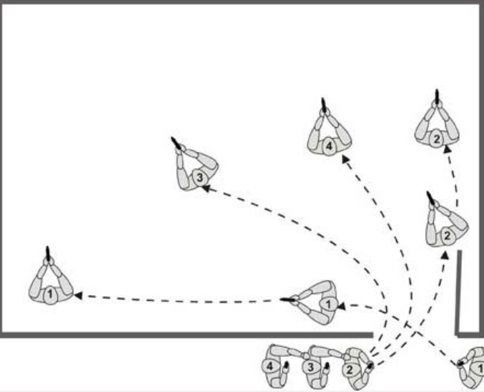
Ширина двери не важна: сотрудники входят один за другим. №1 выдвигается через проём, №2 координируется с ним. №1 в низкой стойке проникает по диагонали и проверяет мёртвую зону по ходу движения; №2 почти одновременно пересекает проём по диагонали в сторону противоположной мёртвой зоны и держится прямо, нависая над №1. Обе зоны зачищаются почти одновременно.
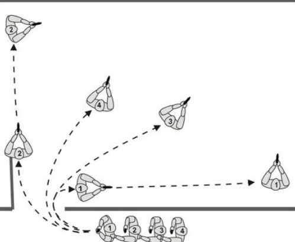
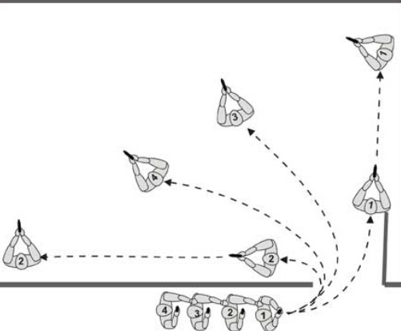
Уместен, когда дверь расположена около стены и бойцам приходится начинать движение с противоположной от стены стороны. Возможны два варианта — выбор делает №1, который входит первым, №2 подстраивается.
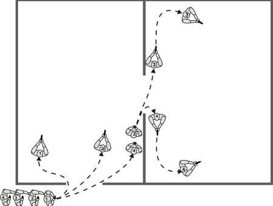
Схема распределения секторов и порядка движения группы при входе в помещение: бойцы последовательно занимают направления и зачищают углы и простенки.

Похожа на «угол», но №1 и №2 становятся спиной к одной из стен, контролируя всё помещение каждый в своём секторе. Применяется, когда помещение последнее и группе не нужно двигаться дальше.
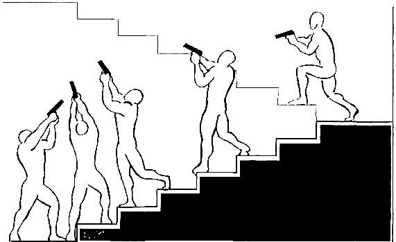
Движение группы вверх по лестничному маршу: бойцы последовательно контролируют пролёт, площадку и верхний этаж, прикрывая друг друга.
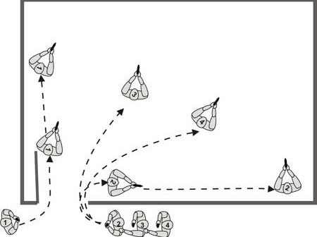
Группа из четырёх бойцов входит в помещение способом «Крючок» или «Крест» — схемы выше. Четвёрка распределяет секторы и работает сообща.
Акроним SAS: Скорость, Агрессия, «Сюрприз».
Тактика применяется при любом штурме, когда главная задача — нейтрализовать преступников за счёт внезапности, стремительности и огневой мощи.
Автомобиль А, в котором находятся заложник и преступники, полностью блокируется четырьмя машинами В. Автомобиль не может двинуться ни вперёд, ни назад, а преступники не могут его покинуть. Ситуация аналогична блокированию здания, и группа захвата реализует свою цель.
Как только автомобиль остановлен, группа действует быстро, чтобы не дать причинить заложнику вред. Если снайперы заранее заняли позиции рядом, они могут немедленно ликвидировать преступника или информировать группу о расположении людей в машине.
Обычно штурм выполняется силами как минимум шести бойцов: четыре штурмующих и два вспомогательных участника, которые помогают проникнуть в машину и извлечь преступников или заложников.
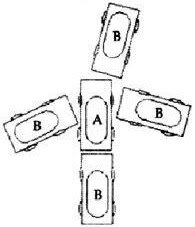
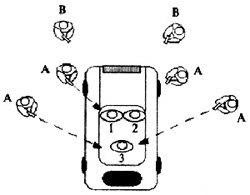
Штурм автомобиля спереди командой из шести бойцов. В некоторых спецподразделениях предпочитают делать то же силами восьми человек. При работе шестёрки четыре бойца А действуют как ударная группа, двое В — группа обеспечения.
Задача — использовать спецсредства и инструменты для вскрытия автомобиля: окон и дверей. На схеме преступники обозначены цифрами 1 и 3, заложник — цифрой 2.
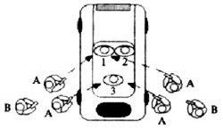
Применяется, когда для извлечения преступников или заложников из автомобиля нужно прежде вскрыть его. Бойцы ударной группы внимательно контролируют действия злоумышленников и готовы открыть огонь при малейшем проявлении агрессии.
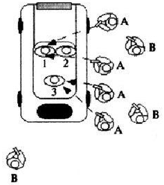
Ведётся, когда одна сторона машины блокирована зданием или чем-то ещё. Если нужно извлечь преступников или заложников, это делается со свободной стороны. К штурму подключается ещё один боец группы обеспечения, контролирующий заблокированную сторону автомобиля.
Ведение огня по находящемуся в машине преступнику может быть сопряжено с трудностями. Тонированные боковые стёкла потребуют выстрела через лобовое, хотя существуют прицельные приспособления, позволяющие стрелять и через затемнённые стёкла. Заложник может сидеть между двумя преступниками, что делает выстрел сбоку практически невозможным.
Из практики групп захвата ФБР известен приём ведения огня через крышу автомобиля: боец вскакивает на неё и стреляет в преступника сверху вниз из дробовика пулей. Приём может быть очень эффективным, но местоположение цели должно быть выявлено с предельной точностью. Приближаясь к автомобилю, члены группы должны исключить возможность попадания под перекрёстный огонь.
Если террорист собирается посадить заложника или заложников в автомобиль, следует рассмотреть возможность завершить инцидент точным выстрелом снайпера или штурмом в момент перемещения.
Даже если снайпер получает «добро» на уничтожение преступника, группа захвата должна быть наготове. В процессе манёвра противник будет особенно внимательным, поэтому спецподразделения часто предпринимают манёвры, упрощающие задачу его уничтожения. Например, автомобиль оставляют перед зданием с выключенным двигателем и ключами на крыше со стороны водителя — снайперу может удаться произвести прицельный выстрел, когда преступник потянется за ключами. Машину можно поставить так, чтобы снайперы могли поразить его через лобовое или заднее стекло.
Цели, подготовка, порядок ведения переговоров, уточняющие вопросы, запреты и типичные ошибки.
Переговоры — коммуникация между сторонами для достижения своих целей, при которой каждая из сторон имеет равные возможности в контроле ситуации и принятии решения, закрепляемого договором.
Установить психологический контакт с преступниками для сохранения жизни заложников.
Узнать максимум информации за минимальное время: количество преступников, мотивы, настрой, наличие и состояние заложников.
Затягивать время для подготовки действий специальных служб.
Получить требования преступников и прийти к итогу, который устроит и власти, и преступников.
/me резким движением руки срывает с себя все шевроны, погоны и отличительные знаки
/me выкладывает все имеющееся оружие, мобильные устройства, рацию
/me выкладывает все имеющиеся документы, устройства фото-, аудио- и видеозаписи
/me достает из полевой сумки маску и белую повязку, одевает маску на голову, белую повязку на предплечьеВопросы задаются согласно требованиям. Если просят деньги — задаются все вопросы из пункта «Деньги». Обязательные вопросы задаются независимо от требований. Можно добавлять свои, не перегибая.
Дальше действовать по инструкции из «Действия во время переговоров», начиная с шестого пункта.
Нельзя игнорировать требования похитителей.
Нельзя как-либо рисковать жизнью заложников.
Нельзя провоцировать, конфликтовать и повышать тон на преступников.
Запрещено снимать маску. Исключение: захватчик ведёт себя агрессивно и начинает угрожать.
Запрещено выдвигать предложения к требованиям преступников.
Запрещено идти за захватчиком. Исключение: угроза жизни заложнику или переговорщику.
Переговорщиком может быть любое должностное лицо, представляющее интересы властей: губернатор, министры, руководство полиции, оперативники ФСБ. Как правило, это сотрудник ФСБ, назначенный командующим спецоперацией или оперативным штабом.
Сигналы оповещения, действия личного состава и нормативы сбора.
Участие в действиях при чрезвычайных ситуациях.
Участие в специальной операции при совершении диверсионно-террористических актов.
Участие в спецоперации по ликвидации незаконных вооружённых формирований.
Участие в спецоперации по освобождению заложников.
Предупреждение и пресечение угона автотранспорта и гусеничной техники.
Предупреждение и пресечение угона речного транспорта.
Предупреждение и пресечение угона воздушных судов.
Пресечение массовых беспорядков в населённых пунктах.
Пресечение захвата важных государственных объектов.
Операция по розыску вооружённых дезертиров.
Пресечение захвата собственных объектов.
Ликвидация последствий чрезвычайных ситуаций.
Розыск автотранспорта войсковой части.
Закрытие воздушного пространства области.
| Сигнал | Действия | Сбор |
|---|---|---|
| ВЬЮГА | Построить личный состав части на парковке, ждать дальнейших указаний. | 180 с |
| ПУРГА | Специальные отряды войсковой части строятся на парковке в полной боевой готовности, ждут указаний. | 90 с |
| ПУРГА-1 | Личный состав части в полной боевой готовности строится на парковке, ожидает указаний. | 120 с |
| ПУРГА-2 | Специальные отряды части строятся на парковке в полной боевой готовности, ждут указаний. | 90 с |
| ГРОЗА-1 | Спецотряды части с отрядами военной полиции выдвигаются на перехват и пресечение угона транспорта незамедлительно. | 30 с |
| ГРОЗА-2 | В воздух поднимаются вертолёты Ка-50 для разведки и преследования. Спецотряды грузятся в катера (при отсутствии — арендуются на причале) и отправляются в погоню. | 60 с |
| ГРОЗА-3 | Объявляется сигнал «КОВЁР». В воздух поднимаются вертолёты Ка-50 и истребители Су-47. При обнаружении воздушного судна применяются меры принуждения к посадке. При сопротивлении запрашивается разрешение на открытие огня. | 30 с |
| ГОЛОЛЁД | Личный состав части собирается на парковке. | 180 с |
| ГОЛОЛЁД-2 | Личный состав поднимается по боевой тревоге на парковке. | 60 с |
| ТУМАН | Спецотряды армии с отрядами военной полиции выдвигаются на поиск и задержание или ликвидацию дезертиров. | 30 с |
| КРЕПОСТЬ | Полная изоляция войсковой части: никто не въезжает и не влетает, никто не выезжает и не вылетает. Личный состав укрепляет бункер, КПП-1, КПП-2, казарму и склад. Разрешён огонь на поражение по любому, кто нарушил режим, включая сотрудников правоохранительных органов. Исключение — сотрудники, находившиеся на территории до введения режима. | — |
| ПЕРЕХВАТ | План, аналогичный плану ГИБДД. | — |
| КОВЁР | Полное закрытие воздушного пространства. Незаконные воздушные суда принуждаются к посадке либо сбиваются. | — |
Для сигнала «ТАЙФУН» действия личного состава в оригинале не расписаны.
Перехватив неприятеля в воздухе, атакующий выполнял устрашающие манёвры — создавал угрозу повреждения самолёта, особенно несущих поверхностей. Подвергшись психической атаке, вражеский лётчик оказывался перед выбором: сесть на чужой территории или погибнуть.
Захват заложников, похищения людей, требования криминала и порядок действий силовых структур.
Минимальное количество участников захвата заложников.
Минимальное количество участников захвата заложников.
| Кому предъявляются требования | Максимальная сумма |
|---|---|
| ТРК | 1 000 000 ₽ |
| Правительство, МВД, ФСИН | 1 250 000 ₽ |
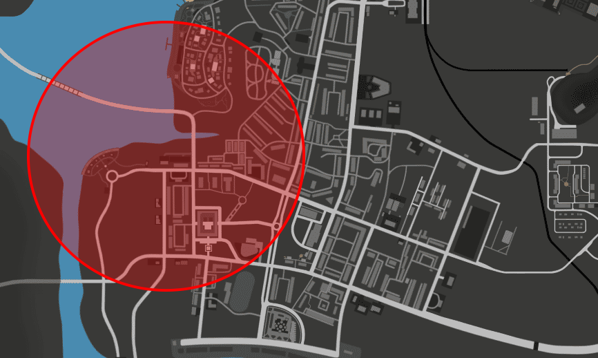
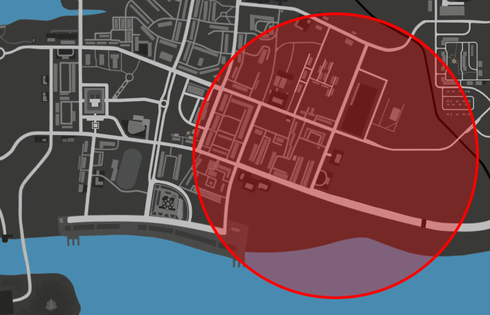
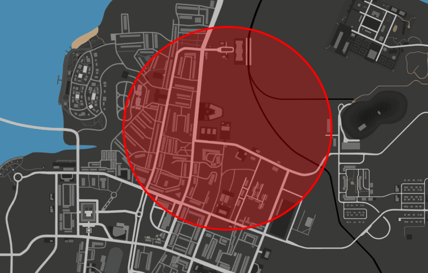
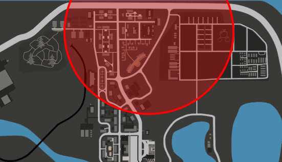
Выкуп передаётся через систему сумок.
| Правило | Описание |
|---|---|
| Кто может похищать | Только члены криминальных организаций или семей. Одиночкам запрещено. |
| Причина | Должна быть ясная мотивация — выкуп, месть, ресурсы. |
| Соотношение сил | Похитителей должно быть в 3 раза больше, чем жертв. |
| Место | Только безлюдные места (без свидетелей и камер). |
| Интервал | Не менее 4 часов между похищениями от одной организации/семьи. |
| Повторное похищение | Одного человека можно похищать не чаще 1 раза в 48 часов. |
| Экипировка | Все похитители обязаны быть в масках и с оружием. |
| Ликвидация жертвы | Не ранее чем через 30 минут после выдвижения требований. |
| Участие руководства | В похищении обязательно участие лидера или заместителя. |
| Ведомство | Должность | Сумма |
|---|---|---|
| Правительство | Адвокат — инспектор | 300 000 ₽ |
| Советник — заместитель министра | 450 000 ₽ | |
| Министр — глава администрации | 600 000 ₽ | |
| Вице-губернатор | 800 000 ₽ | |
| Губернатор | 1 000 000 ₽ | |
| ФСБ | Стажёр — ст. прапорщик | 250 000 ₽ |
| Мл. лейтенант — капитан | 400 000 ₽ | |
| Майор | 600 000 ₽ | |
| Подполковник | 800 000 ₽ | |
| Полковник | 1 000 000 ₽ | |
| Генерал | 1 200 000 ₽ | |
| УМВД / ГИБДД | Рядовой | 100 000 ₽ |
| Мл. сержант — прапорщик | 200 000 ₽ | |
| Мл. лейтенант — лейтенант | 350 000 ₽ | |
| Капитан | 450 000 ₽ | |
| Майор | 550 000 ₽ | |
| Подполковник | 700 000 ₽ | |
| Полковник | 850 000 ₽ | |
| Генерал | 1 000 000 ₽ | |
| Воинская часть | Рядовой | 70 000 ₽ |
| Ефрейтор — ст. сержант | 170 000 ₽ | |
| Старшина — прапорщик | 300 000 ₽ | |
| Ст. прапорщик | 350 000 ₽ | |
| Майор | 450 000 ₽ | |
| Подполковник | 550 000 ₽ | |
| Полковник | 650 000 ₽ | |
| Генерал | 800 000 ₽ | |
| ФСИН | Сержант — старшина | 150 000 ₽ |
| Прапорщик — мл. лейтенант | 250 000 ₽ | |
| Лейтенант — капитан | 350 000 ₽ | |
| Майор — подполковник | 450 000 ₽ | |
| Полковник | 600 000 ₽ | |
| Генерал | 800 000 ₽ | |
| ЕСС | Пожарный — старший пожарный | 70 000 ₽ |
| Спасатель — инструктор | 170 000 ₽ | |
| Инспектор — начальник МЧС | 400 000 ₽ | |
| Интерн — фельдшер | 100 000 ₽ | |
| Врач-специалист | 450 000 ₽ | |
| Заведующий отделением | 600 000 ₽ | |
| Заместитель начальника | 650 000 ₽ | |
| Начальник департамента | 700 000 ₽ | |
| ТРК | Помощник редакции — журналист | 200 000 ₽ |
| Ст. журналист — корректор | 350 000 ₽ | |
| Помощник редактора — редактор | 450 000 ₽ | |
| Зам. директора | 550 000 ₽ | |
| Директор компании | 700 000 ₽ | |
| Гражданские лица | За одного гражданина | до 200 000 ₽ |
Ресурсы на выбор: ящики с патронами, материалами или пружинами.
| Ведомство | Должность | Ресурсы |
|---|---|---|
| Правительство | Инспектор — советник | 5 ящиков |
| Зам. министра — глава администрации | 9 ящиков | |
| Вице-губернатор — губернатор | 15 ящиков | |
| ФСБ | Стажёр — мл. лейтенант | 7 ящиков |
| Лейтенант — капитан | 9 ящиков | |
| Майор — подполковник | 11 ящиков | |
| Полковник — генерал | 15 ящиков | |
| УМВД / ГИБДД | Рядовой — старшина | 5 ящиков |
| Прапорщик — лейтенант | 7 ящиков | |
| Капитан — подполковник | 9 ящиков | |
| Полковник — генерал | 11 ящиков | |
| Воинская часть | Рядовой — сержант | 5 ящиков |
| Старший сержант — прапорщик | 7 ящиков | |
| Старший прапорщик — подполковник | 9 ящиков | |
| Полковник — генерал | 11 ящиков | |
| ФСИН | Сержант — прапорщик | 5 ящиков |
| Мл. лейтенант — капитан | 7 ящиков | |
| Майор — генерал | 9 ящиков | |
| ЕСС | Пожарный — инспектор | 5 ящиков |
| Интерн — врач-специалист | 7 ящиков | |
| Начальник МЧС, заведующий отделением | 9 ящиков | |
| Зам. начальника — начальник | 9 ящиков | |
| ТРК | Помощник редактора — редактор | 5 ящиков |
| Заместитель директора — директор | 9 ящиков | |
| Гражданские лица | — | 5 ящиков |
Глава 4. Запреты, наложенные на сотрудников
Нарушение нормативно-правовых актов Нижегородской области
Наказание: штраф / выговор / 2 выговора / увольнение
Неподобающее поведение в строю при проведении проверок
Наказание: штраф / выговор / увольнение
Употребление релаксантов / алкогольных веществ
Наказание: увольнение
Ложь сотрудникам ФСБ / Правительства / Суда
Наказание: выговор / увольнение
Ношение маски в рабочей форме
Наказание: штраф / выговор / увольнение
Исключение: сотрудники ФСБ, ОСН «Гром», ОСН «Берсерк», СР, ССНВП. Иным лицам — исключительно при оперативно-профилактических мероприятиях, специальных операциях и иных мероприятиях, сопоставимых с указанными по характеру и задачам.
Незарегистрированный личный транспорт в форме и при исполнении
Наказание: выговор / 2 выговора + ответственность по ст. 20.7 КоАП
Исключение: адвокаты Палаты адвокатов — любой транспорт без обязательной регистрации.
Музыкальные проигрыватели в форме и при исполнении обязанностей
Наказание: штраф / выговор
Форма и погоны, не соответствующие званию и должности
Наказание: выговор / увольнение
Исключение: военнослужащие ФСБ; сотрудники ГУ МВД; сотрудники ОСБ — при оперативно-профилактических мероприятиях или работе под прикрытием.
Злоупотребление должностными полномочиями
Наказание: 2 выговора / увольнение
Выдача себя за сотрудника другой / несуществующей организации или отдела
Наказание: выговор / увольнение
Нарушение иерархии власти согласно гл. 3 ОУГ
Наказание: выговор / увольнение
Отсутствие на рабочем месте в рабочее время более 15 минут
Наказание: штраф / выговор / понижение до двух ступеней
15 минут даётся с момента входа в игру, чтобы добраться до работы. Исключение: аптека, магазин 24/7, АЗС.
Стрельба по гражданским и должностным лицам без предусмотренных законом оснований
Наказание: увольнение + занесение в общий чёрный список (ОЧС)
Задержание граждан, проживающих в области не более 5 лет (включительно), если иное не предусмотрено законодательством Нижегородской области
Наказание: выговор
Распространение служебной тайны
Наказание: выговор / увольнение
Спойлер: состав служебной тайны — будет добавлен позже.